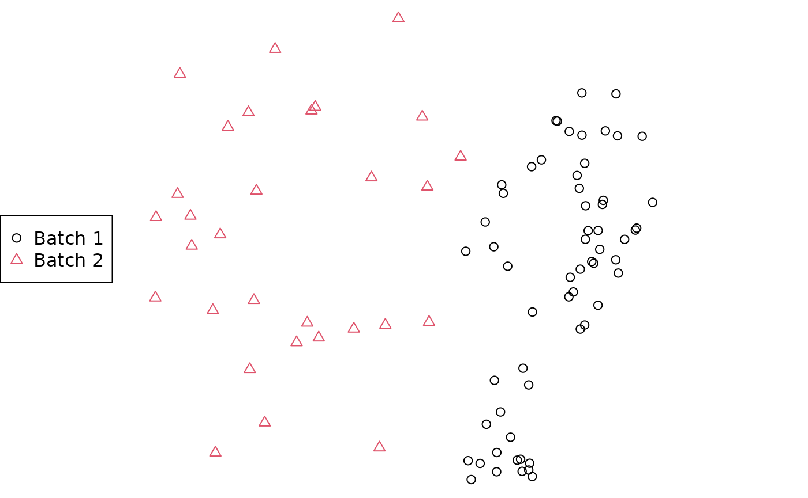

Comparing sets of trees from different analyses
Martin R. Smith
Source:vignettes/compare-treesets.Rmd
compare-treesets.RmdA common application of tree space analysis is to compare the outputs of different analyses – for instance, trees obtained from different gene sequences, or results obtained using different models or methods (e.g. Bayesian, maximum likelihood, or parsimony).
This can be accomplished quickly using the MapTrees() GUI:
Or you can do this in the TreeDist GUI:
Load trees from file: Select first tree file
Select an appropriate sample size
Select Replace existing
Load each additional set of trees from file using Add batch to existing

Load tree batches
- On the Display tab, select Point symbols: One per batch, or Colour points by: Batch

Tree batch styles
At the command line, this can be accomplished as follows:
# Load trees
library("TreeTools", quietly = TRUE)
batch1 <- as.phylo(0:99, 8) # Generate 100 similar trees
batch2 <- as.phylo(200:249, 8) # A separate batch of 50 trees
styles <- c(1, 2) # Select plotting colours / symbols
treeStyle <- rep(styles, c(length(batch1), length(batch2)))
# Calculate distances
library("TreeDist")
distances <- ClusteringInfoDistance(c(batch1, batch2))
# Construct over-simple 2D PCoA mapping
mapping <- cmdscale(distances, k = 2)
# Plot mapping
par(mar = rep(0, 4))
plot(mapping,
asp = 1, # Preserve aspect ratio - do not distort distances
ann = FALSE, axes = FALSE, # Don't label axes: dimensions are meaningless
col = treeStyle, # Colour
pch = treeStyle # Plotting symbol
)
legend("left", c("Batch 1", "Batch 2"), col = styles, pch = styles)
For a more suitable analysis than the simple 2D plot above, consult the companion vignette. Even then, it’s always worth being cautious before interpreting mapped areas; see the warnings and recommendations in Smith (2022).
Smith, M. R. (2022). Robust analysis of phylogenetic tree space. Systematic Biology, syab100. doi: 10.1093/sysbio/syab100